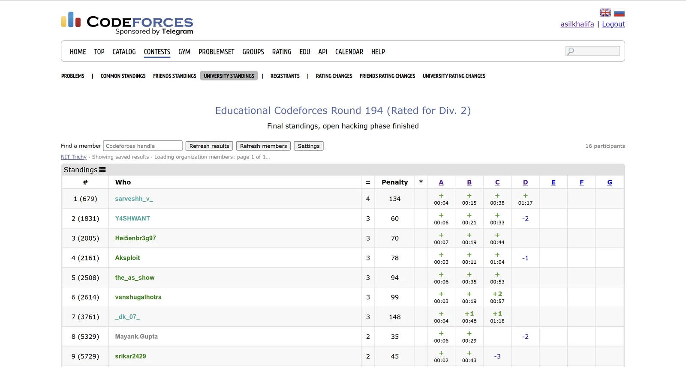
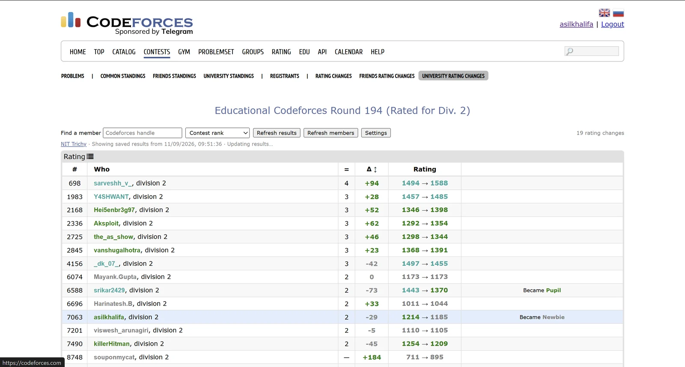

A Chrome extension that adds two tabs to a Codeforces contest — how your
university placed, and what the round did to everyone's rating — beside the
friends tabs Codeforces already has.
Chrome Web Store · not yet published
Version 1.2.1, Manifest V3, Chrome 110 and later. The listing is in preparation;
the install button lands here once it is approved.
What it looks like

The new tabs sit in Codeforces' own second-level menu, and the table is its
layout, not a replacement for it. The rank column leads with the rank inside the
university and keeps the overall contest rank in brackets — first here also
placed 679th overall. The line under the toolbar is the extension showing saved
results immediately while it re-reads the member list behind them.

University rating changes for the same round: official old and new ratings, the
signed delta, and the rank moves Codeforces announces. Any column sorts, the
dropdown reorders the table, and handle search narrows it — all of which
survive a background refresh instead of resetting under you.
What it adds
University standings
The contest's official standings, filtered to your organization and re-ranked inside it.
University rank alongside the overall contest rank
Per-problem results, points or solves, penalty and hacks
Ties share a rank, the way Codeforces does it
University rating changes
Published rating changes for the same group, once Codeforces releases them.
Official old and new ratings with the signed delta
Handle search and sortable columns
Search and sort survive a background refresh
Why this exists
Codeforces has had friends standings for years. There is no equivalent for the
organization on your profile, so the only way to see how your university did in a
contest is to scroll the full standings and recognise handles — thousands of
rows, for a group that is usually a few dozen people.
The information is all public and already on the page. This just filters it and puts
it where you would expect to find it.
How it picks your university
By default it reads the organization linked on your own signed-in Codeforces profile,
so there is nothing to configure and two people sharing a machine each get their own.
If you are signed out, or your profile has no organization set, it says so and offers
to let you choose one rather than quietly showing an empty table.
Open any public contest and click University standings.
To override the detected organization, open the extension's settings and switch to manual.
Or open any organization's rating list on Codeforces and click Use this organization.
Members who have never been rated may not appear on an organization's rating list at
all, and spelling variants are separate Codeforces organizations. Both are handled by
the Extra members box in settings, which takes a list of handles.
Getting the roster right
Membership comes from the organization's public rating list, which Codeforces serves
200 members to a page, including inactive and retired rows. A roster is saved only
when the read is structurally complete — every page before the last one full,
and no page that came back empty. A roster quietly missing people looks exactly like a
correct one, which is the failure worth designing against.
The member count Codeforces prints next to an organization's name cannot be used for
that check. It is served from a cache that lags the list itself: on 11 September 2026,
Harvard University's list held 42 members under a heading that said 41, because
someone had just joined. So the count is treated as a hint — if it suggests
members are missing, the extension reads past the last linked page until a page adds
nobody new, rather than rejecting a roster that was complete all along.
What it reads, and what it keeps
It reads public Codeforces data only: the handle shown in the page header, to know
whose profile to check; the public organization link on that profile; the
organization's public rating list; and the contest's public standings and rating
changes.
Requests go directly to codeforces.com. There is no server of mine in the path.
No account, no API key, no sign-in, and no access to passwords or submissions.
Settings, member lists and filtered results stay in local extension storage, capped at 40 saved views and roughly 3 MiB.
No ads, no analytics, no telemetry, no tracking, nothing sold.
Every line of JavaScript ships inside the package. Nothing is fetched and executed at runtime.
Removing the extension removes everything it stored. The
full privacy policy spells all of this out
line by line, and the same document ships inside the extension.
What it does not cover
Individual public contests only — not gyms, mashups or private contests.
Combined Div. 1 + Div. 2 views. Open each division's own contest page.
Virtual, practice and unofficial entries. Official participants only.
Rating changes before Codeforces publishes them — and unrated contests, such as the ICPC Online Challenges, never get them at all.
Members with no official participation in that contest simply have no row.
Questions
Do I need a Codeforces account?
Only for automatic detection, which reads the organization from the profile you are signed in as. Choose an organization manually and the extension works signed out. There is nothing to sign in to on my side either way.
Does it work for organizations that aren't universities?
Yes. Codeforces treats every organization the same way, so a company or a club works identically — the tabs say "university" because that is what almost everyone uses it for.
Someone from my university is missing. Why?
An organization's rating list is not a directory of everyone who ever registered there. Members who have never been rated may not be listed, and a differently spelled organization name is a separate organization on Codeforces. Add the missing handles in the Extra members box in settings.
Why are there no rating changes for this contest?
Either Codeforces has not published them yet, or the contest is unrated and never will have them. Long unrated events such as the ICPC Online Challenges fall into the second case, and the extension says which one applies instead of asking you to retry forever.
Is this official?
No. It is an independent project, not affiliated with Codeforces or with any university. It reads the same public pages and public API you can open yourself.
Does it hammer the Codeforces API?
No. Requests are paced with a gap between them and coordinated across tabs, member lists are re-read about once a day, and saved results are shown immediately while any refresh happens in the background.
Independent project · not affiliated with Codeforces or any university.
Codeforces data is public and belongs to Codeforces. Support ·
Privacy policy
Built by Asil Khalifa.